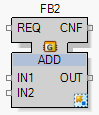
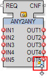

Generic Interface Editor
Use the Generic Interface Editor to define the data type of inputs or outputs of a generic function block. A generic function block lets you define the number and data types of inputs and outputs, according to the requirements of your application.
The editor can be opened by right clicking:
-
The function block, then in the context menu click Interface Editor, or
-
The symbol in the lower right corner of a generic function block.
Example:

Generic function blocks can be found in various libraries, for example Runtime.Base.
Editor Features
|
Column |
Description |
|---|---|
|
IO Name |
Lists the currently available inputs and outputs. The display, positioning, and number of inputs and outputs in the editor depend on the specific function block. For example, for the ADD function block, the output is positioned as a child of the input, because with the ADD block the output has the same data type that is defined for the inputs, and the number of outputs cannot be increased. Also, for the ADD function block, the inputs have an identical data type and therefore are not listed separately.
NOTE: With other function blocks, where you can define the data type of inputs and outputs separately (e.g. ANY2ANY), the ports are listed separately.
|
|
Count |
In the uppermost row(s) of this column (e.g. CNT, CNTIN, COUNTOUT, i, etc. depending on the function block) you can define the number of inputs / outputs. The image of the function block will be adjusted accordingly after you click OK. Alternatively, you can move the mouse cursor over the symbol in the lower right corner of the block and, when it changes to a double headed arrow, adjust the number of connections by pulling the lower edge of the block while holding down the left mouse key. NOTE: If pulling at the block edge with the double arrow does not show any effect and the field in column Count is grayed out, the selected function block is a generic block with a static count of ports. In this case only the type of the ports can be edited. |
|
Type |
The data type of each available port can be adjusted. Click in the relevant field to display an arrow. Click the arrow to open a list of data types.
NOTE: This function is not available for grayed out fields. Instead, the data type of these fields will be determined automatically.
|
|
Define whether the adjusted data type will be an array and, if so, its size. (The function is not available with grayed out fields.) |
Generic Function Blocks – Interface Editor
For generic function blocks (for example, ADD from the library), right-click on the function block and choose Interface Editor from the context menu. In generic function blocks, the number and/or type of the ports can be adapted.
In the lower right corner of generic function blocks there is a small symbol:

When the mouse cursor changes into a double headed arrow, the number of inputs/outputs can be adjusted by pulling the lower edge of the function block with pressed left mouse key.
The  symbol indicates that the corresponding port of the function block has not yet been assigned to a data type. In this case, assign a data type using the Interface Editor, otherwise an error is detected when you Build the solution.
symbol indicates that the corresponding port of the function block has not yet been assigned to a data type. In this case, assign a data type using the Interface Editor, otherwise an error is detected when you Build the solution.
A right click on this symbol opens a context menu, which can be used to open the Interface Editor.
This context menu also contains - for some function blocks (e.g. BITMAN) - selections (CNTIN and CNTOUT) that let you switch between input and output (set the check mark at the desired position). This defines whether the number of inputs or the number of outputs are varied by pulling the lower function block edge, as described above. This is true only for function blocks that support the independent definition of inputs and outputs.
By right-clicking on a still unassigned data input of a function block, you can open a context menu and select the following actions:
-
Add constant: adds a constant to the selected data input. This function is available as long as this data input has no constant assigned, no data connection to another function block exists and you are in offline state (refer to the topic Watch). When creating CATs the data inputs can be parameterized so that a list box (Combo Box etc.) is offered for the user while when adding a constant. For further information about that look at Attribute.
-
The entries Watch and Force Value are only available in online state. A description for these and for Routing Linker and Connections... can be found in the topic Watch.
Creating Several Connections Simultaneously
If you want to connect function blocks providing several connections, it is not necessary to draw each connection line separately. The two FBs can be selected and connected via context menu command.
For a description of how to do this, refer to the section 3. Connection objects in the Editors topic.